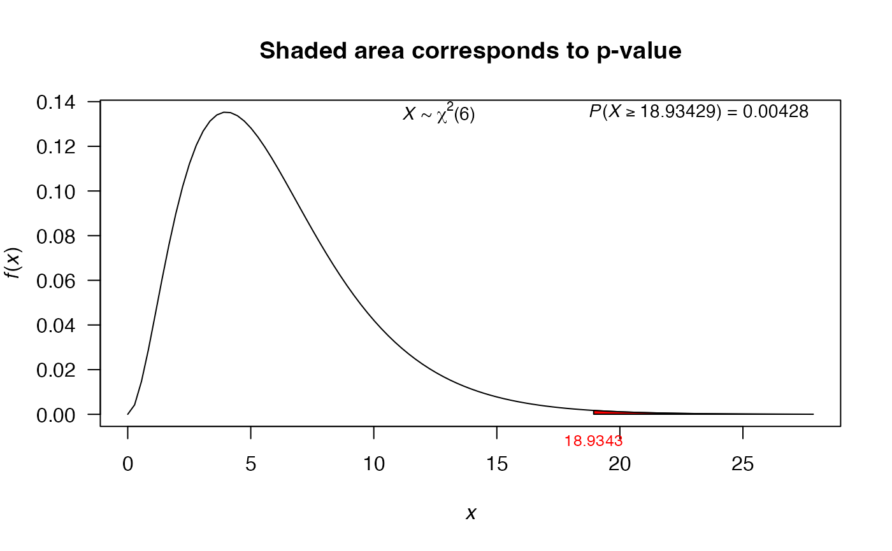

This function performs the test for a single variance or two variances given the vectors. This function is a generalization of var.test function from stats package.
var.test(
x,
y = NULL,
alternative = "two.sided",
null.value = 1,
conf.level = 0.95
)Arguments
- x
a (non-empty) numeric vector of data values.
- y
an optional (non-empty) numeric vector of data values.
- alternative
a character string specifying the alternative hypothesis, must be one of
two.sided(default),greaterorless. You can specify just the initial letter.- null.value
the hypothesized number (variance or ratio of the variances) in the null hypothesis.
- conf.level
confidence level of the interval, by default its value is 0.95.
Value
A list with class htest containing the following
components:
- statistic
the value of the statistic.
- p.value
the p-value for the test.
- conf.int
a confidence interval for the variance.
- estimate
the sample variance (or ratio of the sample variances)
- null.value
the specified hypothesized value for alternative hypothesis.
- alternative
a character string describing the alternative hypothesis.
- method
a character string indicating the type of test performed.
- data.name
a character string giving the name of the data.
Examples
# One sample -----
# Interval confidence
duration <- c(1470, 1510, 1690, 1740, 1900, 2000, 2030,
2010, 2190, 2200, 2290, 2380, 2390, 2480,
2500, 2580, 2700)
var.test(x=duration, conf.level=0.95)
#>
#> X-squared test for variance
#>
#> data: duration
#> X-squared = 2209576, df = 16, p-value < 2.2e-16
#> alternative hypothesis: true variance is not equal to 1
#> 95 percent confidence interval:
#> 76600.78 319873.17
#> sample estimates:
#> variance of x
#> 138098.5
#>
# Hypothesis testing
# H0: sigma2 = 100
# H1: sigma2 > 100
weight <- c(775, 780, 781, 795, 803, 810, 823)
res1 <- var.test(x=weight, alternative='greater', null.value=100)
res1
#>
#> X-squared test for variance
#>
#> data: weight
#> X-squared = 18.934, df = 6, p-value = 0.004276
#> alternative hypothesis: true variance is greater than 100
#> 95 percent confidence interval:
#> 0.000 1157.789
#> sample estimates:
#> variance of x
#> 315.5714
#>
# Using the plot function
plot(res1)

# Two samples -----
# Hypothesis testing
# H0: sigma1/sigma2 = 1
# H1: sigma1/sigma2 != 1
x1 <- rnorm(50, mean = 0, sd = 2)
x2 <- rnorm(30, mean = 1, sd = 1)
res2 <- var.test(x1, x2)
res2
#>
#> F test to compare two variances
#>
#> data: x1 and x2
#> F = 3.5107, num df = 49, denom df = 29, p-value = 0.0005441
#> alternative hypothesis: true ratio of variances is not equal to 1
#> 95 percent confidence interval:
#> 1.763855 6.605082
#> sample estimates:
#> ratio of variances
#> 3.510696
#>
plot(res2, from=0, to=10)